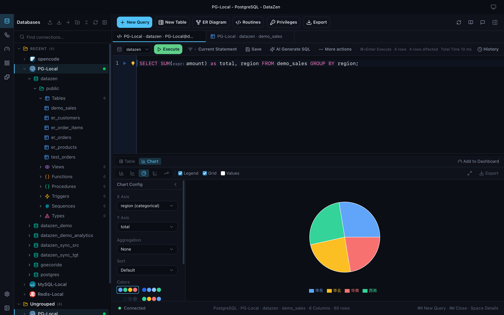
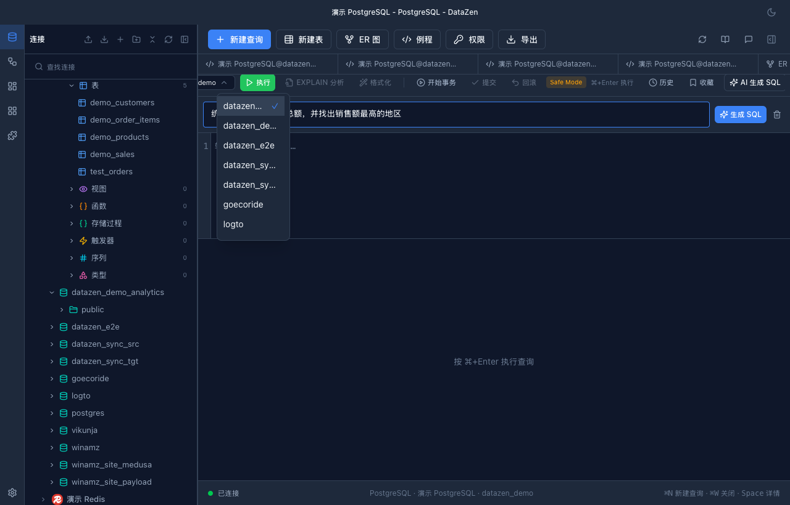
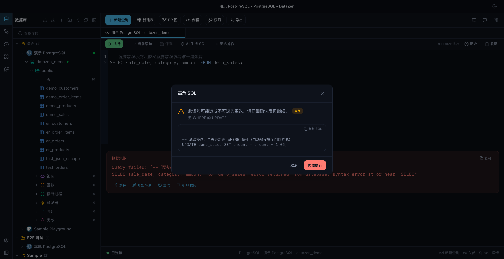
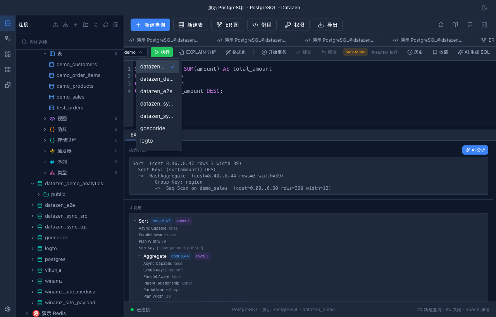
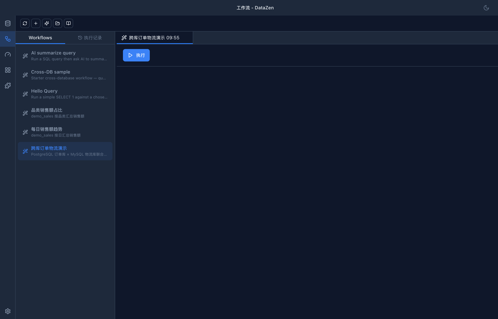
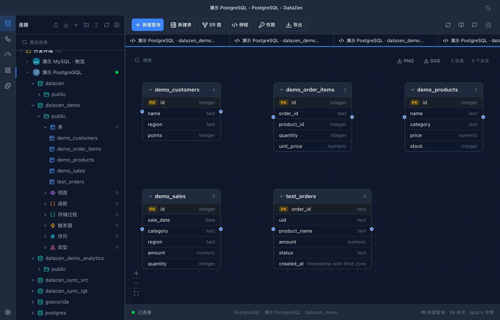

查询、排障、分析、自动化——让 AI 队友陪你搞定数据库，全部在一款轻量桌面应用里本地完成。
免费 · 开源 · macOS / Windows / Linux
数据库数据留在本机 —— AI 请求只发往你自己配置的服务商。
SELECT DATE_TRUNC('month', paid_at) AS month,
SUM(amount) AS revenue
FROM orders
WHERE paid_at >= '2026-01-01'
GROUP BY 1 ORDER BY 1;
| month | revenue |
|---|---|
| 2026-01-01 | 128,400 |
| 2026-02-01 | 142,150 |
| 2026-03-01 | 151,980 |
| 2026-04-01 | 167,320 |
SQL 编辑器、EXPLAIN 分析、Schema 浏览、ER 图、备份——日常数据库工作的主力工具。
NL2SQL、Chat 侧栏，以及把数据库接入 Claude、Cursor 等 Agent 的 MCP Server。
浏览表结构、任意结果集一键成图、自动生成例行报表——不用离开桌面。
DataZen 内置 MCP Server：把查询、Schema 检视、EXPLAIN 乃至整条 Workflow 封装成工具，供你已经在用的 Agent 调用。
--mcp-stdio），可用于服务器、脚本与 CI例如：每天自动生成一份销售日报：
任意结果集一键变图表。智能推荐折线 / 柱状 / 饼图 / 散点 / 面积，效果满意即导出 PNG / SVG。

| DataZen | 传统数据库客户端 | |
|---|---|---|
| 内置 AI——NL2SQL、错误诊断、EXPLAIN 解读 | ✓ | — |
| 供 AI Agent 调用的 MCP Server | ✓ | — |
| 跨库 Workflow | ✓ | — |
| 本地优先——无需账号、无云端服务 | ✓ | 因产品而异 |
| 任意结果集出图 | ✓ | 多为付费插件 |
| 安装包体积 | < 15 MB | 普遍 100 MB 以上 |
| 价格 | 免费 · GPLv3 | $99+/席 常见 |
对比反映的是截至 2026 年主流数据库客户端的常见情况，仅供参考。
安装包小、秒级启动，远轻于常见的重量级客户端。
DataZen 不运营任何云数据库服务；凭据以 AES 加密存放在系统钥匙串。
OpenAI、Anthropic、DeepSeek 或自定义端点——请求发到哪里由你决定。
下载、安装、连库即可使用，没有任何要注册的东西。
内置 15+ 种数据库；按需增加 OLAP 与专用引擎，默认安装保持精简。
GPLv3 协议，完整源码随时可在 GitHub 审计。
每个 AI 数据库工具都必须诚实回答的问题：我的数据去哪了？




